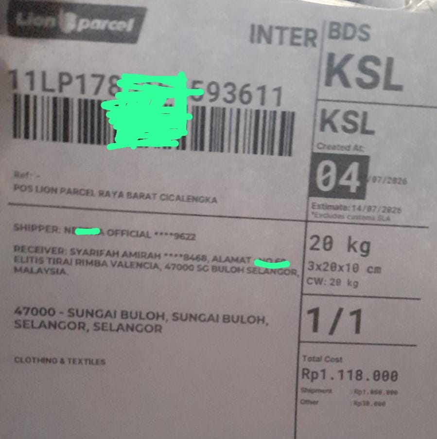

Ekspedisi Paket ke Malaysia: Cara Kirim, Tarif & Syarat Lengkap via Lion Parcel

Mau kirim ekspedisi paket ke Malaysia untuk keluarga, TKI, atau jualan online ke Kuala Lumpur? Sekarang makin mudah! Lion Parcel Bandung POS101 Nanjungmekar melayani pengiriman internasional via layanan INTERPACK ke seluruh Malaysia - dari Johor, KL, Penang, hingga Sabah Sarawak.
✈️ Cek Tarif Paket ke Malaysia Sekarang!
Bisa kirim makanan kering, baju, dokumen, obat herbal. Chat WA untuk cek tarif per-kg ke Malaysia:
💬 Chat WA - Tarif ke Malaysia1. Keunggulan Kirim Paket ke Malaysia via Lion Parcel
- Terbang Langsung via Lion Air Group: Paket tidak transit lama, estimasi 3-5 hari kerja sampai Malaysia.
- Bisa Kirim Makanan: Rendang kering, keripik, sambal sachet, mie instan, bumbu masak bisa! (asal packing vakum & non-cair)
- Dokumen & Non-Dokumen: Dari ijazah, paspor, sampai baju dan sparepart bisa.
- Tracking Internasional: Dapat resi Interpack dan bisa tracking sampai Kuala Lumpur.
- Bantu Urus Bea Cukai: Kami bantu jelaskan invoice dan packing agar lolos custom Malaysia.
2. Syarat dan Barang yang Tidak Bisa Dikirim ke Malaysia
Agar paket tidak ditahan di Bea Cukai Malaysia, perhatikan ini:
- Wajib Lampirkan: Foto KTP pengirim, alamat lengkap penerima + kode pos Malaysia, dan No. HP penerima
- Packing: Wajib dus coklat tebal, lakban Lion Parcel, dan invoice 3 lembar di luar paket
- TIDAK BISA: Cairan >100ml, aerosol, powerbank, barang mudah meledak, uang tunai, dan obat keras
- Makanan: Tidak boleh ada daging segar, buah segar, atau cairan. Makanan kering vakum AMAN.
📍 Counter Ekspedisi Internasional Bandung - POS101
Drop paket internasional ke Malaysia di counter kami, atau request jemput gratis area Rancaekek-Cicalengka.
Jl. Raya Barat Cicalengka RT 1 RW 1, Nanjung Mekar, Rancaekek, Kabupaten Bandung.
3. Cara Kirim Paket ke Malaysia dari Bandung
- Timbang paket dan foto isinya
- Chat WA 0851-8309-0486 kirim foto + alamat Malaysia lengkap
- Kami cek tarif Interpack per-kg + estimasi
- Paket dijemput atau drop ke counter POS101
- Bayar, dapat Air Waybill (AWB), dan tracking online
Kesimpulan
Jika Anda cari ekspedisi paket ke Malaysia yang murah, aman, dan bisa kirim makanan, Lion Parcel Interpack via POS101 Nanjungmekar Bandung adalah pilihan terbaik. Proses mudah, buka setiap hari, dan CS fast respon bantu sampai paket sampai di tangan penerima di Malaysia. Hubungi kami sekarang untuk cek tarif terbaru!
Nama Agen: Lion Parcel Bandung POS101 Nanjungmekar
Layanan: Interpack - Ekspedisi Paket ke Malaysia & Internasional
Alamat: Jl. Raya Barat Cicalengka RT 1 RW 1, Nanjung Mekar, Rancaekek
WA: 0851-8309-0486 - Buka 08.00-20.00 WIB